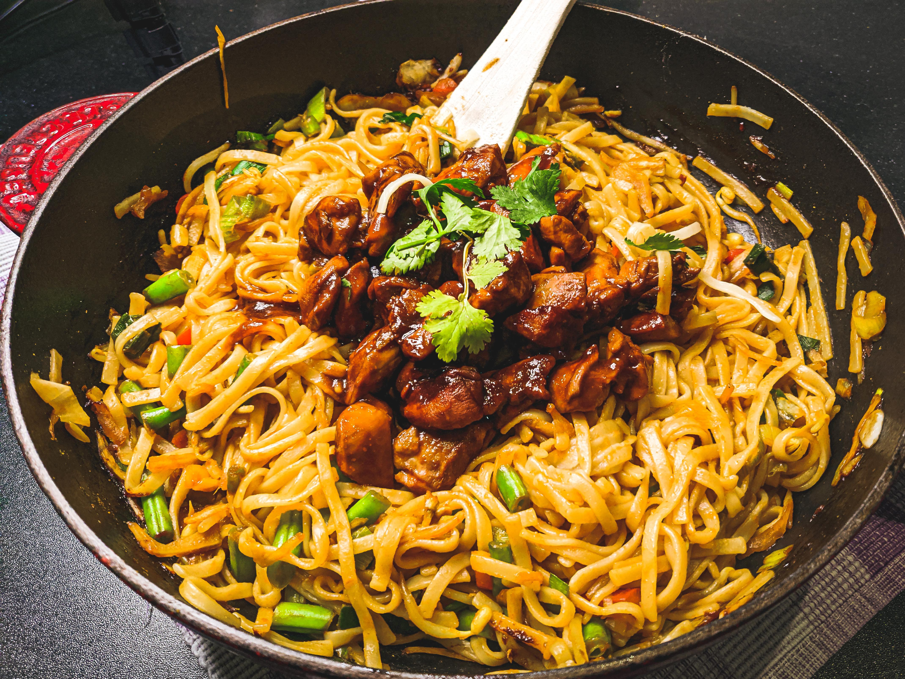

Bami Recipe

YAMI BAMI
this recipe is inspired by my baby buni bami (known as "The Great BBB")
this chimken goreng bami will make you go ohmaga chimki
ingredients
- egg nidils
- bin sprouts
- carrots even tho thats not how buni makes it. suspicious
- galik
- chimken
- saute sauce thing
- salt
steps
- cook nidils
- saute chimken with galik
- add onion and suspicious carrot
- it